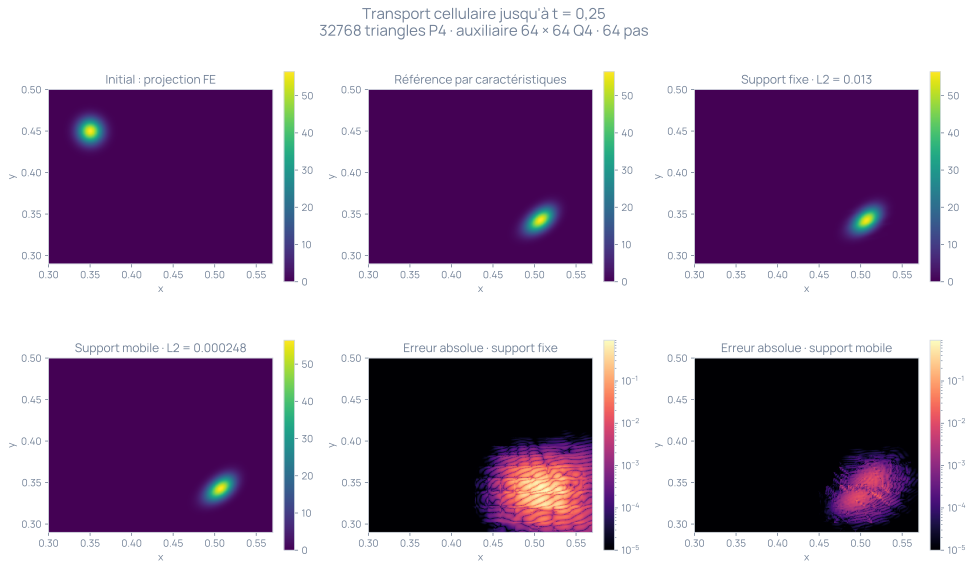
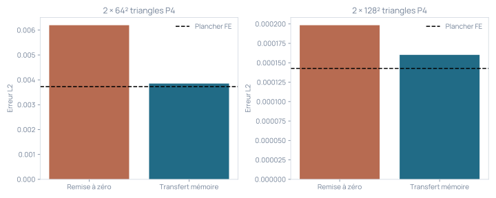
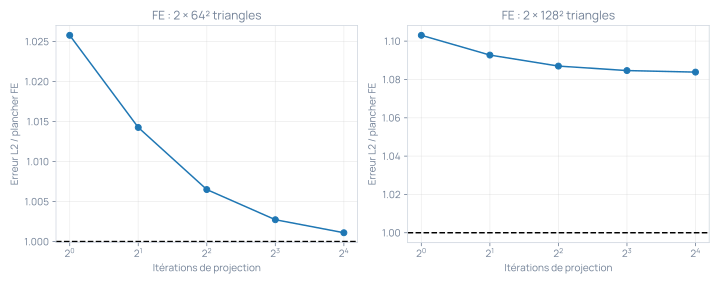
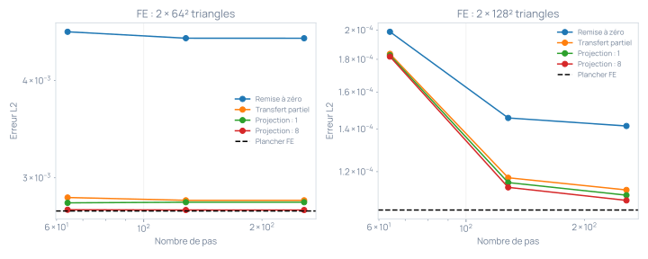
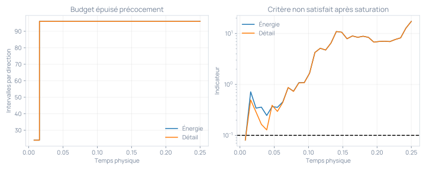

Résultats disponibles le 16/11/2026 à 23:59 (Europe/Paris). Calculs en double précision sur une RTX 5090. Les figures représentent les solutions calculées, avec une référence indépendante par caractéristiques.
Un support auxiliaire mobile résout le défaut observé lorsque la bosse quitte la zone fine d'une grille fixe. Le couplage FE avec mémoire accepte désormais un changement de support contractant, et un raffinement exactement emboîté sans perte d'énergie. Les formules s'exécutent sans racine ni inversion de matrice. Ces propriétés sont démontrées dans restart_theory.pdf et vérifiées sur GPU; elles n'établissent ni une nouveauté bibliographique, ni une convergence générale vers l'EDP.
Deux méthodes sont distinguées : le couplage avec mémoire maintient le champ FE à chaque changement; la référence d'advection pure transporte uniquement le champ DG auxiliaire entre une projection FE initiale et une projection FE finale. Cette seconde méthode est la plus rapide ici, mais elle n'offre pas les opérations physiques FE intermédiaires du couplage.

Le domaine est le tore unité. Une vitesse cellulaire incompressible prescrite transporte jusqu'à t=0,25 une bosse de largeur 0,01, initialement centrée en (0,35; 0,45), de norme L2 proche de 1. L'espace FE principal possède 32768 triangles DG P4, soit 491520 coefficients par champ; la graduation fixe vaut 0,95. Le support principal auxiliaire comporte 64×64 cellules Q4, soit 102400 valeurs par champ. Deux supports orientés supplémentaires servent aux cisaillements diagonaux. Les méthodes n'ont donc pas le même nombre d'inconnues.
Le centre circulaire de l'énergie est calculé à partir de la solution, tous les quatre pas. Le support se déplace lorsque ce centre s'éloigne de plus de 0,03. Ce critère convient à une structure localisée; il n'est pas un estimateur d'erreur et ne traite pas plusieurs structures éloignées. La référence intègre les caractéristiques sur GPU par 512 pas RK4; les erreurs sont intégrées avec quadrature de degré 20 et subdivision indépendante. Les extrema sont échantillonnés.

Trois répétitions alternent DG eulérien et support mobile pour 1, 4 et 16 champs distincts et proches spatialement (graine 752). Chaque champ doit satisfaire L2 ≤ 0,001. Le coût inclut construction des opérateurs, détection initiale du centre, évolution, adaptations et transfert final. Le maillage FE et la projection initiale communs, ainsi que les diagnostics de référence, sont exclus des deux côtés. La compilation CUDA utilise le cache; ce ne sont pas des mesures de premier lancement sans cache.

| Champs | DG (s) | Mobile (s) | Ratio | L2 DG max | L2 mobile max |
|---|---|---|---|---|---|
| 1 | 5.475 | 0.6195 | 8.838 | 0.0002865 | 0.0002478 |
| 4 | 7.908 | 0.5916 | 13.37 | 0.0008215 | 0.0004813 |
| 16 | 21.12 | 0.6091 | 34.67 | 0.000877 | 0.0004549 |
Le pas DG retenu passe un contrôle de croissance sur champs aléatoires et la tolérance finale. Le réglage plus agressif (échelle 12) est rejeté : le contrôle aléatoire révèle une croissance d'énergie supérieure au seuil. Ce contrôle fini n'est pas un certificat spectral de stabilité. La variante mobile à 16 pas échoue à la tolérance; le benchmark utilise 64 pas.
L'état est représenté par trois tableaux (v,w,a), avec v=R*w+(I−R*R)a. Son énergie est ||w||²+||a||²−||Ra||². La remise à zéro conserve v mais perd toute la mémoire invisible dans ce champ. Le transfert contractant conserve une partie de cette mémoire. En cas de raffinement exactement emboîté, l'injection corrige w par les nouveaux modes de a et préserve toute l'énergie augmentée.
| FE n | Remise à zéro L2 | Mémoire L2 | Plancher FE |
|---|---|---|---|
| 64 | 0.006198 | 0.003851 | 0.003729 |
| 128 | 0.0001984 | 0.0001602 | 0.0001427 |

Une projection itérative supplémentaire utilise le recouvrement des deux espaces dans le même L2. Son filtre spectral contractant conserve davantage de mémoire lorsque le nombre d'itérations augmente. Cela ne garantit pas une diminution de l'erreur de transport. Les résultats ci-dessous sont rapportés séparément.
| FE n | Itérations | L2 | Coût total (s) |
|---|---|---|---|
| 64 | 1 | 0.003825 | 0.9891 |
| 64 | 2 | 0.003782 | 0.9307 |
| 64 | 4 | 0.003753 | 0.9062 |
| 64 | 8 | 0.003739 | 0.9432 |
| 64 | 16 | 0.003733 | 0.9106 |
| 128 | 1 | 0.0001574 | 1.923 |
| 128 | 2 | 0.000156 | 1.87 |
| 128 | 4 | 0.0001551 | 1.911 |
| 128 | 8 | 0.0001548 | 1.931 |
| 128 | 16 | 0.0001547 | 1.9 |

Une réaction de taux 1+0,5 sin(2πx) est appliquée par l'exponentielle exacte de son générateur Galerkin local, en deux demi-pas autour de chaque advection. Chaque mise à jour FE est réinjectée dans la mémoire. La référence indépendante intègre simultanément la trajectoire et l'exposant de réaction. L'énergie doit décroître; la masse n'est plus conservée par cette EDP.

| Degré | Raffinement | Défaut Gram | Défaut observation |
|---|---|---|---|
| 1 | global | 1.221e-15 | 6.661e-16 |
| 1 | local | 7.772e-16 | 5.551e-16 |
| 2 | global | 2.22e-15 | 1.11e-15 |
| 2 | local | 1.665e-15 | 1.221e-15 |
| 4 | global | 4.219e-15 | 3.386e-15 |
| 4 | local | 4.108e-15 | 3.209e-15 |
Le premier contrôleur raffine selon la partie du générateur FE non représentée par le support. Les sélections par énergie et par détail hiérarchique atteignent toutes deux la limite de 96 intervalles dès le deuxième contrôle. L'erreur finale reste proche de 0,148. La conservation de l'énergie lors du raffinement ne répare donc pas ce contrôleur : le budget est épuisé tôt, et aucun déraffinement ne libère les cellules derrière la structure. L'indicateur utilisé ne mesure qu'un terme du défaut de consistance.

nested-sanitizer : ========= ERROR SUMMARY: 0 errors
memory-transfer-sanitizer : ========= ERROR SUMMARY: 0 errors
ambient-sanitizer : ========= ERROR SUMMARY: 0 errors
Les validations indépendantes couvrent les degrés 1, 2 et 4, les projections, les adjoints en masse, les constantes, les changements de support et les identités de Gram. Toutes les opérations numériques — recouvrements, quadrature, réductions, matrices denses de contrôle — sont exécutées sur CUDA. Le processeur pilote les expériences et dessine les figures. Il s'agit de prototypes isolés dans experiments/slfe, pas d'une intégration de production au langage variationnel Rodin.
La piste d'article est le couplage FE avec mémoire sur supports variables, accompagné de garanties d'énergie et de coût mesuré. Les conditions manquantes sont une erreur contrôlée pour des vitesses FE générales, un problème couplé où la mémoire apporte un bénéfice indispensable, un contrôleur robuste pour plusieurs structures et une comparaison avec des concurrents GPU plus proches. Le résultat actuel ne justifie pas une revendication de rupture.
Besse, Deriaz et Madaule (2017), adaptation multirésolution SL-DG
Adams (2026), recouvrements SL-DG sur grilles adaptatives
Nabizadeh et al. (2024), CO-FLIP et remise à zéro des cartes de flot
Einkemmer et Moriggl, SL-DG sur GPU
Les sources sont dans experiments/slfe : matched_benchmark.py, adaptive_study.py, moving_study.py, refinement_study.py, nested_validation.py et ambient_validation.py. Les fichiers results_night2 contiennent les paramètres, erreurs, historiques et empreintes du code. night_fields.py reproduit les champs; night_report.py reconstruit ce rapport sans simulation; restart_theory.tex fournit les hypothèses et preuves. Publication exclusivement sur la branche SLFE du fork keckj/rodin.